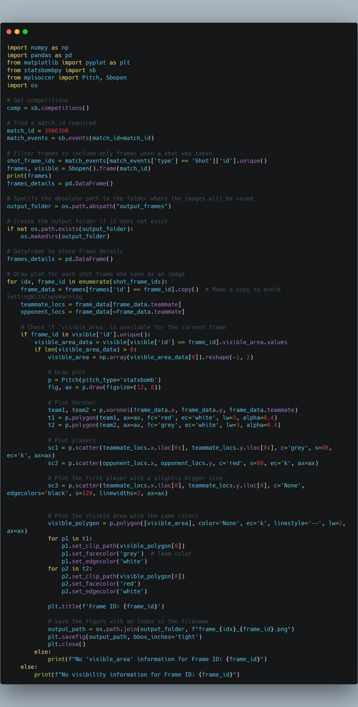

Intro To Voronoi Visible Frames (Python)
Hi All,
Just a small code piece to share this week.
I've previously written about shot freeze frames and visibility in Tableau here.
That version access' the freeze frames in a similar way but preps the data fit for Tableau by creating a path element and all the points of the polygon.
This version of code looks at how we can plot a series of freeze frames (not necessarily shot data) and then plotting the chart using python packages instead of the need for Tableau.
You can find a copy of the code in the Github link at the top of the page.

As a brief explanation of the code,
-
The necessary libraries are imported:
numpy,pandas,matplotlib.pyplot,statsbombpy,mplsoccer, andos. -
The variable
compis assigned the result of callingsb.competitions(). This retrieves a DataFrame containing information about available competitions. -
The variable
match_idis set to a specific match ID. This match ID is used to retrieve the events for that specific match usingsb.events(match_id=match_id). -
The
shot_frame_idsvariable is assigned the unique frame IDs where shots occurred during the match. This is done by filtering the events DataFrame to include only events of type 'Shot' and extracting the unique frame IDs. -
The variable
framesis assigned the result of callingSbopen().frame(match_id). This retrieves the frames for the specified match. -
The variable
visibleis assigned the result of callingSbopen().visible(match_id). This retrieves the visibility information for the specified match. -
The
output_foldervariable is set to the absolute path of the "output_frames" folder. This is the folder where the generated images will be saved. -
If the output folder does not exist, it is created using
os.makedirs(output_folder). -
The current frame's data is retrieved from the
framesDataFrame usingframes[frames['id'] == frame_id]. -
The code checks if the 'visible_area' information is available for the current frame using
frame_id in visible['id'].unique(). -
If the 'visible_area' information is available, a plot is created using the
Pitchclass from themplsoccerlibrary. -
The Voronoi polygons for the two teams are plotted on the pitch using the teammate and opponent locations.
-
The figure is saved as an image in the output folder with a filename containing the index and frame ID.
-
The loop continues until all shot frames have been processed.
Overall, this code generates individual frames for each shot event in a match, plots the players' positions, visible area, and Voronoi polygons, and saves the frames as images in a specified output folder.

Going Further:
- Why not try plot this in Tableau? or data viz tool of your choosing.
- Build a small multiples to show a variety of different actions.
- Try create an animated voronoi like Will Suttons.
As always, Let me know how you get on with this one. I can be reached on Twitter (X), @_CJMayes.
LOGGING OFF,
CJ